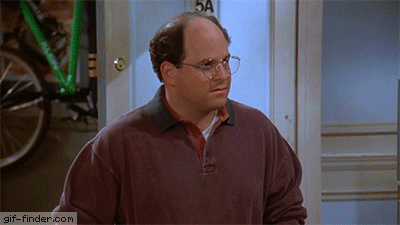

Total Football — Without dropping a beat, the most reliable, consistent, well-hung team finds another win this week. You can’t stop me, bitches.
The Moneyballers — Coach Mochrie traded Barkley away, which puts his team on a time limit before production slows down. But until then, he’s double fisting Genny Lites and double fisting your fantasy team, all at once.

Brokeback Boolers — It took some time, but with the return of Melvin Gordon and Coach Clancy’s general incompetence when it comes to trading, the pieces are falling into place. That’s why we’ve named this week’s power rankings EXPOSED EDITION. It’s only a matter of time before this plummet spirals out of control.
Drunk Taylor Swift — I’ve given her shit in the past, and her record doesn’t reflect this ranking, but she’s a sleeper pick for playoffs, and her team looks better by the week. Keep an eye out for this dark horse.
Team James — From the dumpster to here, this team is looking like the most improved from week 1. Coach Moore has reportedly stopped drinking copious amounts of alcohol every single night, and it shows on the field. This team is solid.
Beane’s Boolers — This team is injured everywhere, and is the definition of inconsistency. I have no idea how to predict how his games will go from week to week, and neither does he. This could either be totally fine, or a shitshow and a half. Beware.
The Fournetteicatorz — This team is ok.
Roc Silly Boys — The Silly Boys look silly right now, and so does Coach Gloss, who began 2-0 and has now found himself 2-2. Trying to reclaim the glory days of two weeks ago, they face off against the best team in the league next week. YIKES.
Barkley Reincarnated — Congrats, you won a game. I’m not even proud of you considering your opponent. Speaking of which....
Shitbag Titty Fuck — Nice name change, it’s your best managerial decision of the season. I don’t know how to even describe how awful this week was for you. It’s the worst week we’ve seen in the two years the Bool League has existed, by far. You gave ALEX a win. That’s how bad your team is.